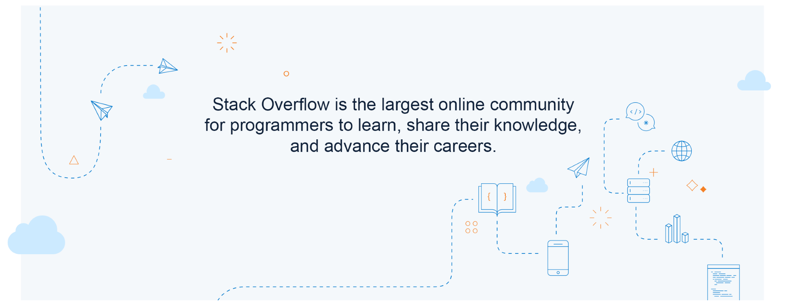
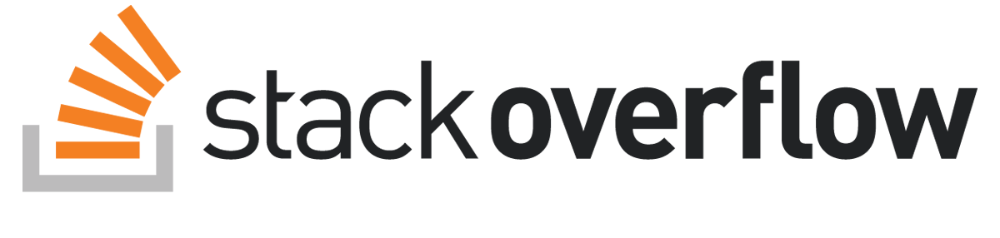
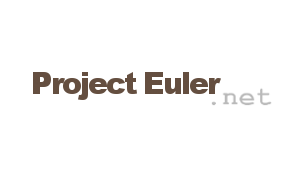

Hello World | Jumat, 28 November 2016 |
Hello people of the world. Nama saya Zulfikar, bias dipanggil Izul. Ya, nama saya cuma satu kata. Jadi, saat anda tanya nama panjang saya,
Saya akan jawab, "Zulfikaaaaaaaaaaaaaaaaaaaaaaaaaaaaaaaaaaaaaaaaaaaa...r".
Lulusan dari SDS Tadika Puri, SMPN 17 Kota Tangerang Selatan, dan SMAN 2 Kota Tangerang Selatan. Kini saya sedang menempuh jenjang pendidikan baru di Universitas Gunadarma, dengan jurusan Teknik Informatika.
Kegiatan yang sedang diikuti saat ini adalah menjadi peserta Besut Kode Universitas. Sebelum saya bisa mendaftar sebagai peserta, saya diharuskan untuk membuat sebuah akun di beberapa situs web. Seperti GitHub, Stack Overflow, Project Euler, dan Wikipedia Indonesia.
GitHub is a web-based Git repository hosting service. It offers all of the distributed version control and source code management (SCM) functionality of Git as well as adding its own features. It provides access control and several collaboration features such as bug tracking, feature requests, task management, and wikis for every project.
GitHub offers both plans for private repositories, and free accounts which are commonly used to host open-source software projects. As of April 2016, GitHub reports having more than 14 million users and more than 35 million repositories, making it the largest host of source code in the world.
The trademark mascot of GitHub is Octocat, an anthropomorphized cat with cephalopod limbs, portrayed in a manga style.
GitHub adalah layanan penginangan web bersama untuk proyek pengembangan perangkat lunak yang menggunakan sistem pengontrol versi Git. GitHub menawarkan paket gratis dan komersial untuk proyek sumber terbuka dan diluncurkan sejak tahun 2008. Menurut survei terhadap pengguna Git pada tahun 2009, GitHub adalah situs penginangan Git terpopuler.

Image 1| The largest community for programmers
Stack Overflow is a privately held website, the flagship site of the Stack Exchange Network, created in 2008 by Jeff Atwood and Joel Spolsky. It was created to be a more open alternative to earlier question and answer sites such as Experts-Exchange. The name for the website was chosen by voting in April 2008 by readers of Coding Horror, Atwood's popular programming blog.
It features questions and answers on a wide range of topics in computer programming.

Image 2| Stack Overflow's logo
The website serves as a platform for users to ask and answer questions, and, through membership and active participation, to vote questions and answers up or down and edit questions and answers in a fashion similar to a wiki or Digg. Users of Stack Overflow can earn reputation points and "badges"; for example, a person is awarded 10 reputation points for receiving an "up" vote on an answer given to a question, and can receive badges for their valued contributions, which represents a kind of gamification of the traditional Q&A site or forum.
Project Euler (named after Leonhard Euler) is a website dedicated to a series of computational problems intended to be solved with computer programs. The project attracts adults and students interested in mathematics and computer programming. Since its creation in 2001 by Colin Hughes, Project Euler has gained notability and popularity worldwide. It includes over 550 problems, with a new one added every weekend (except during the summer). Problems are of varying difficulty but each is solvable in less than a minute using an efficient algorithm on a modestly powered computer. Problems can be sorted on difficulty. A forum specific to each question may be viewed after the user has correctly answered the given question. As of July 2016 Project Euler has about 611,200 users from all over the world (who solved at least one problem).


Image 1| Project Euler's logo and Euler's Portrait
Participants can track their progress through achievement levels based on the number of problems solved. A new level is reached for every 25 problems solved. Special awards exist for solving special combinations of problems, for instance there is an award for solving fifty prime numbered problems. A special Eulerians level exists to track achievement based on the fastest fifty solvers of recent problems so that newer members can compete without solving older problems.

Gambar 1| Wikipedia's logo
Wikipedia (wɪkɪˈpiːdiə atau wɪkiˈpiːdiə wik-i-pee-dee-ə) adalah proyek ensiklopedia multibahasa dalam jaringan yang bebas dan terbuka, yang dijalankan oleh Wikimedia Foundation, sebuah organisasi nirlaba yang berbasis di Amerika Serikat. Nama Wikipedia berasal dari gabungan kata wiki dan encyclopedia. Wikipedia dirilis pada tahun 2001 oleh Jimmy Wales dan Larry Sanger, dan kini merupakan karya referensi paling besar, cepat berkembang, dan populer di Internet. Proyek Wikipedia bertujuan untuk memberikan ilmu pengetahuan manusia.
Keistimewaan Wikipedia adalah selain menyajikan informasi yang biasa ditemui di dalam sebuah ensiklopedia, Wikipedia juga memuat artikel-artikel yang biasanya ditemukan di dalam almanak, majalah spesialis, dan topik-topik berita yang masih hangat. Banyak orang yang menggunakan Wikipedia ini untuk menyelesaikan tugas dan pekerjaan rumah.
Wikipedia berawal sebagai proyek sampingan Nupedia, ensiklopedia bebas daring yang artikelnya ditulis oleh para ahli. Larry Sanger, yang mendirikan Nupedia bersama Jimmy Wales, melontarkan ide mengenai ensiklopedia berbasis wiki pada 10 Januari 2001 di milis Nupedia. Kemudian pada 15 Januari 2001, Wikipedia secara resmi diluncurkan di situs www.wikipedia.com.